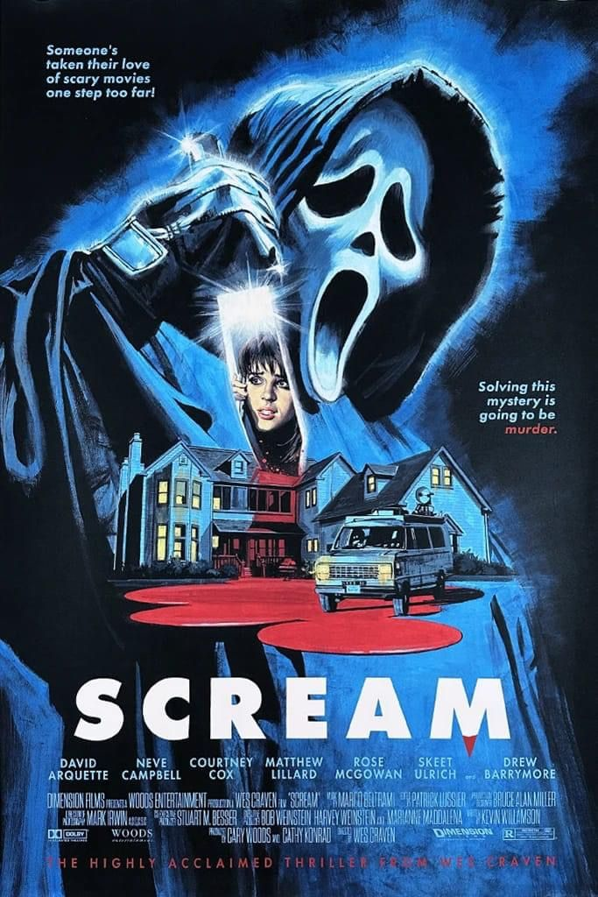

Pânico (1996)

Diretor: Wes Craven
Atores Principais: Neve Campbell, Courteney Cox, David Arquette, Skeet Ulrich e Matthew Lillard
Gênero: Terror / Slasher / Suspense
Censura: 14 anos
Duração: 111 minutos (1h 51min)
Sinopse
Uma pacata cidadezinha se transforma em um cenário de medo quando um assassino mascarado conhecido como Ghostface começa a perseguir um grupo de adolescentes locais. Fascinado por filmes de terror, o criminoso usa as regras do gênero para fazer jogos mentais com suas vítimas. A estudante Sidney Prescott se vê no centro desse mistério enquanto tenta descobrir a identidade do assassino antes que seja tarde demais.
← Voltar ao catálogo